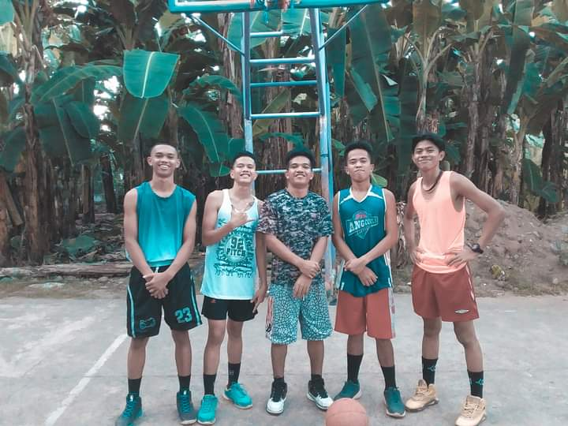
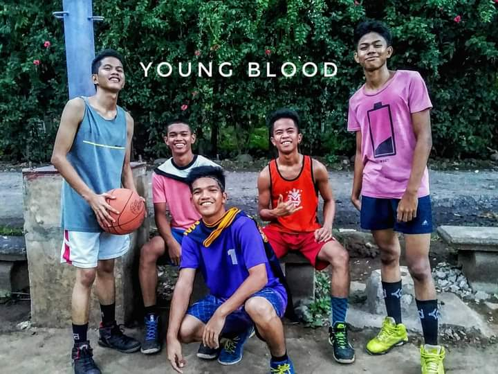
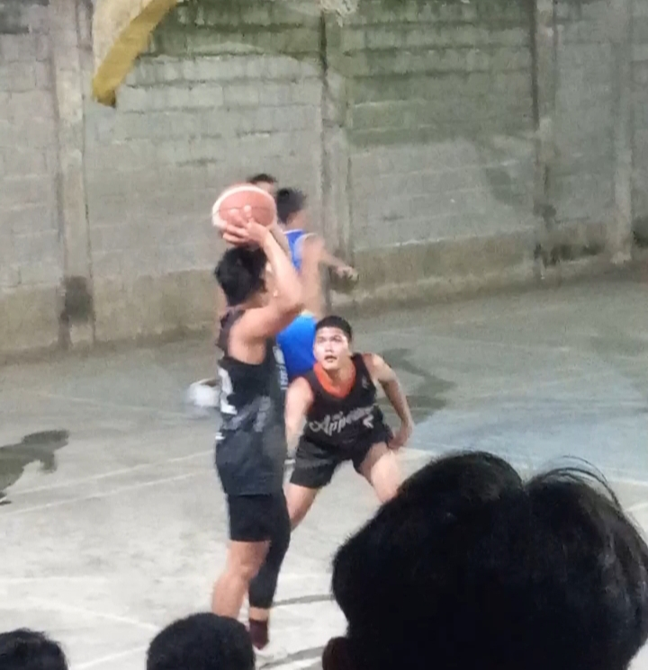

Basketball has been more than just a game to me, its been a cornerstone of my life's journey. it taught me about perseverance, teamwork, and the exhilaration of pushing past my limits.

Some of my most cherised memories revolve around playing Basketball with friends. There's a unique bond that forms on the court, where communication flows efforlessly through passes and gestures.
